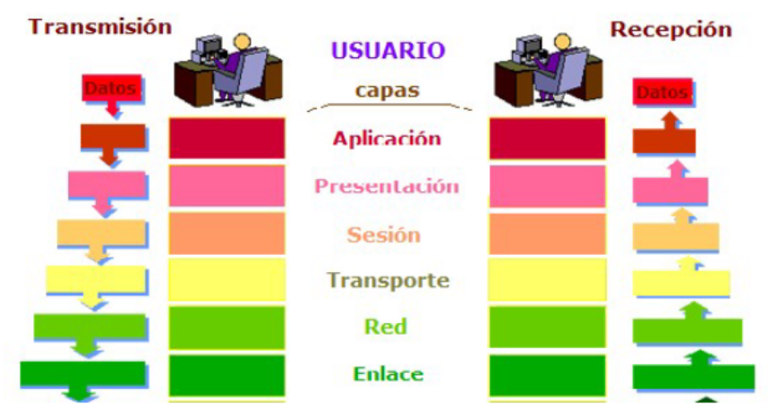

Definimos red informática como dos o más dispositivos conectados para compartir los componentes de su red, y la información que pueda almacenarse en todos ellos.
Si tomamos como referencia la definición dada por Andrew S. Tanenbaum, una red de computadoras, también llamada red de ordenadores o red informática, es un conjunto de equipos informáticosconectados entre sí por medio de dispositivos físicos que envían y reciben impulsos eléctricos, ondas electromagnéticas o cualquier otro medio para el transporte de datos, con la finalidad de compartir información y recursos.
Está última definición es la que nos va a servir de punto de partida para el desarrollo de la unidad de trabajo, ya que, como irás comprobando, para poder trabajar con las redes de ordenadores necesitamos conocer los sistemas de comunicación más utilizados, la arquitectura que las hace posible, los protocolos asociados, la forma de conectarlas y sus componentes.
Aunque en el desarrollo de la unidad veremos diferentes características de las redes de ordenadores, y daremos una explicación más amplia, es conveniente empezar citando algunas de las más importantes, y que han contribuido a su generalización:
- Conectividad: la posibilidad de conexión de diferentes dispositivos entre sí con la finalidad de compartir recursos propios o ajenos, tanto en entornos locales como en entornos remotos.
- Escalabilidad: una red de ordenadores puede ampliar fácilmente sus posibilidades, además esta red puede conectarse con otras redes, y así dar mayores prestaciones.
- Seguridad: esta característica es deseable y necesaria, aunque no siempre se cuida lo suficiente. En algunos casos las redes aumentan la seguridad ante pérdidas de datos, ya que duplican información, y en otros casos disminuyen la seguridad de esos datos, ya que están más disponibles. Es conveniente considerar esta característica como una de las más importantes.
- Optimización de costes: si podemos compartir recursos, y estos recursos nos dan una mayor productividad, además de facilitarnos el trabajo, estamos optimizando costes y sacando mayor rendimiento a nuestra inversión.